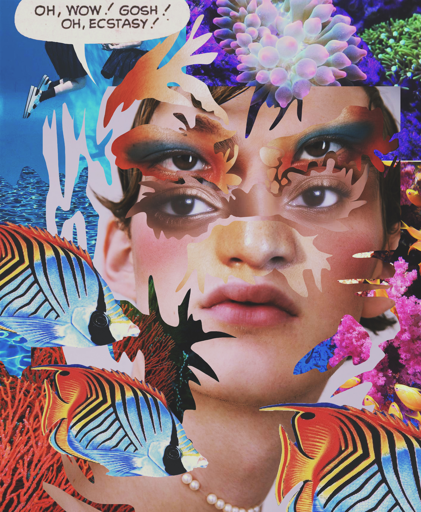
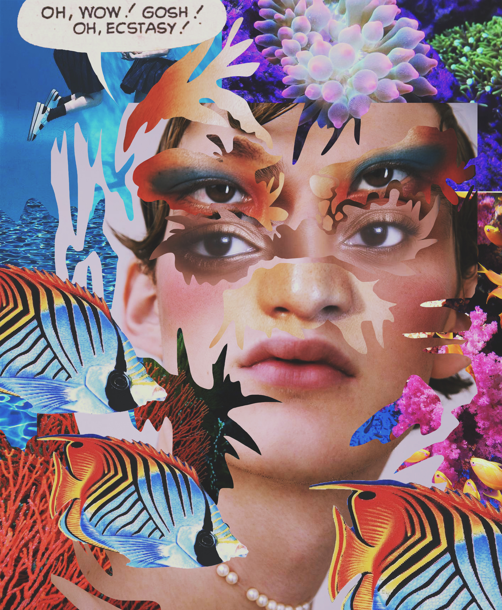

BAD MAGAZINES
...............................
ARTV 24201 / Collage
The inspiration behind this series include the works of Hannah Höch and Wangechi Mutu, where the body is severed then pieced back together in grotesque ways. Made with digitally foraged images and Adobe Photoshop.

 
